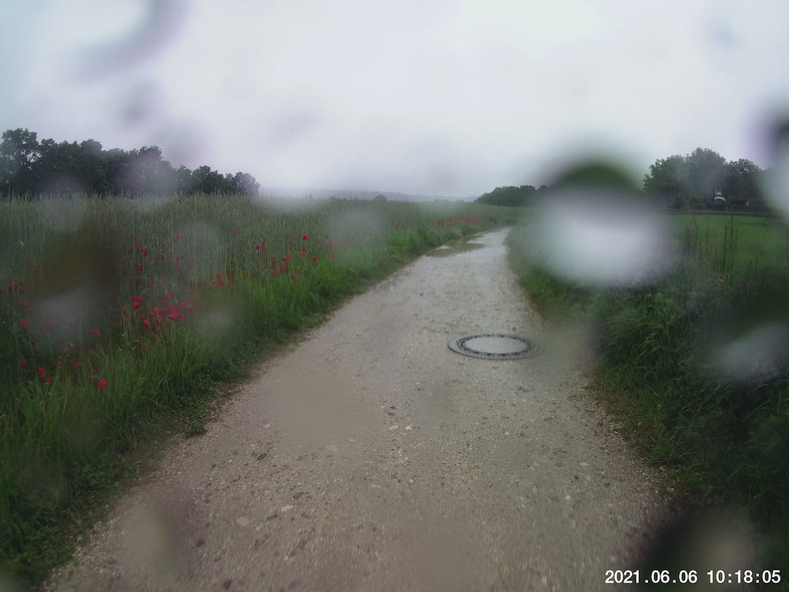
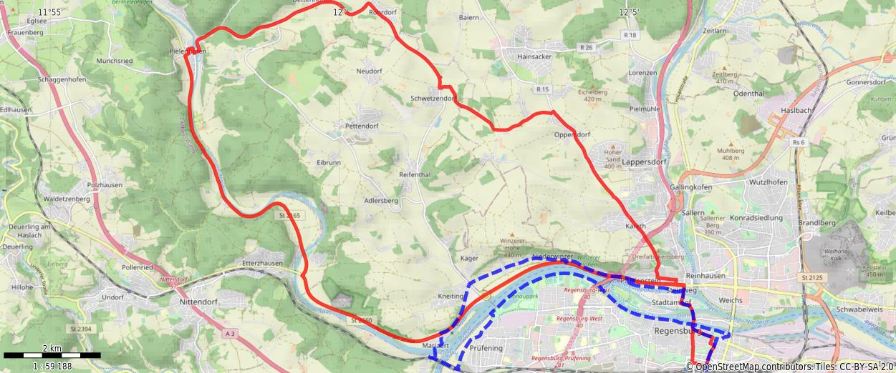

Rained out OTW to Pielenhofen
It was supposed to rain all day. I was excited to see a break predicted, so I saddled up and trudged on.
I left the garage to find a fine mist greeting me on the street. I thought to myself:
You got this, Self. Press on, you’re tougher than this.
I pressed on. I GOT DRENCHED.
By the time I got to Mariaort, I was just done. I can handle being cold. I can handle being wet. But both is another story. And so I turned back. Still got almost exactly half of my route in, so there’s that.
Couple final points on this trip:
-
The north bank bike path is still off-limits, so I rode through Niederwinzer. That was a nice stretch; I’d do that again any time, whether the bike path is open or now.
-
The mount for my cheapo action cam snapped off due to cobblestones when I was most of the way home. Gotta find another way to mount it…maybe strap it onto my head?
Snap

Route
You might need to tap or click the map to make it bigger. The red solid route was my intention. The blue dashed route is my actual route.
{kind=link}
Stats
Total Distance: 18.5 km
Time: 1:16
Calories: 786
Calories from fat: 25 %
Average Heart Rate: 124
Maximum Heart Rate: 158
Fat Burn: 0:26
Fitness: 0:50